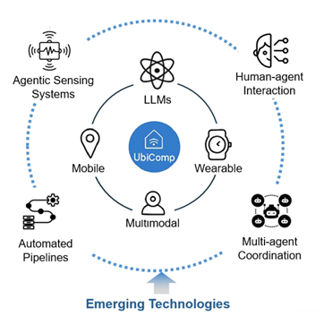

Call for Papers
Important Dates
| Submission Deadline |
|
| Acceptance Notification |
|
| Camera-ready Deadline |
|
| Workshop Date | October 12, 2026, Shanghai, China |
| Submission Website | PCS (https://new.precisionconference.com/submissions) — track: Ubicomp/ISWC 2026 workshop UbiSense |
Workshop Theme and Goals

The scope of the UbiSense workshopUbiquitous sensing has become a cornerstone of modern computing, enabling seamless interactions between humans, devices, and their surrounding environments. Sensors embedded in wearable technologies, smart homes, urban infrastructures, and healthcare systems continuously generate vast and diverse data streams, capturing motion, physiological signals, environmental conditions, and complex social dynamics. Recent advances in artificial intelligence, particularly the rise of agentic AI, are transforming how sensing systems operate. Moving beyond passive data processing, modern AI systems can function as autonomous agents that perceive their environment, reason about objectives, plan actions, and adapt dynamically based on feedback.
UbiSense 2026 focuses on this emerging convergence of ubiquitous sensing and agentic AI. The workshop aims to explore how autonomous agents can actively participate in sensing pipelines — ranging from data collection and interpretation to decision-making and interaction. This includes intelligent sensor orchestration, automated hypothesis generation, multi-agent coordination across modalities, and natural language interfaces that enable intuitive human-agent collaboration. Bringing together researchers and practitioners from ubiquitous computing, artificial intelligence, human-computer interaction, and related domains, UbiSense 2026 seeks to advance the next generation of sensing systems that are not only context-aware but also proactive, adaptive, and capable of meaningful interaction.
Topics of Interest
We encourage submissions on, but not limited to, the following topics:
- Autonomous AI agents for sensor data collection, analysis, and decision-making
- Agent-orchestrated experiment pipelines for ubiquitous sensing research
- Agentic AI-driven frameworks for ubiquitous sensing
- Multi-agent systems for distributed and heterogeneous sensor networks
- Tool-augmented LLM agents for interacting with sensing infrastructure
- Automated hypothesis generation and testing on sensor datasets
- Adaptation of LLMs and foundation models for time-series and sensor data
- Model architecture and tokenisation approaches for streaming sensor data
- Multimodal fusion with agentic reasoning (e.g., vision-language-sensor agents)
- Natural language interfaces for querying and interpreting sensor data
- Human-agent collaborative sensing and shared autonomy
- Privacy-preserving and trustworthy agentic sensing systems
- Edge computing and efficient deployment of AI agents on resource-constrained devices
- Datasets, benchmarks, and evaluation frameworks for agentic sensing
- Applications in healthcare, smart environments, wearables, and urban sensing
Submission Details
We will solicit two categories of papers: (1) Full papers (6 pages, excluding references): Original research contributions presenting novel theories, methodologies, or empirical studies related to AI-driven ubiquitous sensing; (2) Short Papers (4 pages, excluding references): Preliminary research findings, early-stage ideas, or ongoing projects that can benefit from community feedback and discussion. All papers must use the ACM SIGCHI Master Article template as specified in the UbiComp/ISWC 2026 submission guidelines. This workshop uses a single-blind review process; submissions must not be anonymized, and authors should include their names and affiliations on the paper. All papers will be reviewed by at least two workshop technical committee members or Organizers. All papers will be digitally available through the workshop website, and will be included in the UbiComp/ISWC 2026 Adjunct Proceedings. A Best Paper Award will be presented to recognize outstanding contributions. At least one author of each accepted paper must register for the conference and the workshop. During the workshop, each paper will be presented briefly by one of the authors, with additional time allocated for demonstrations and discussion.